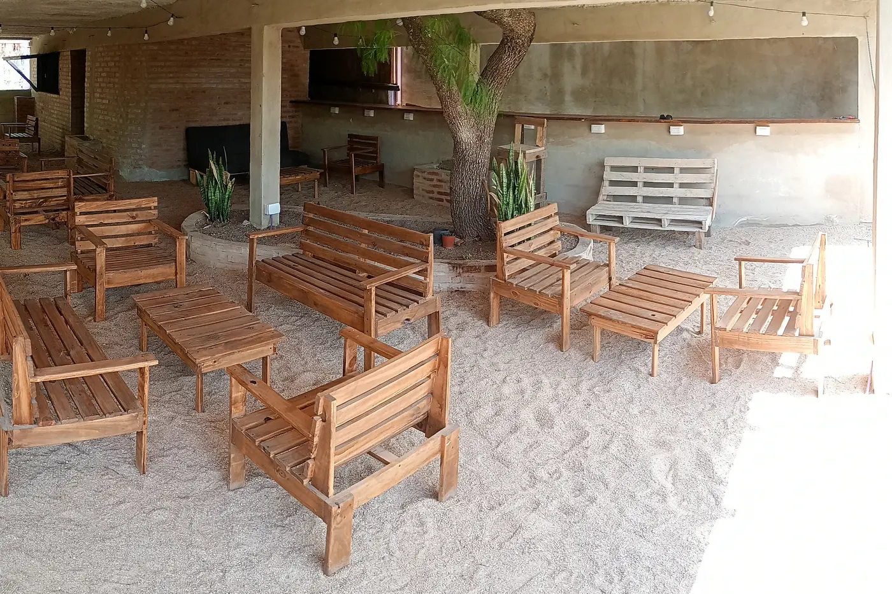
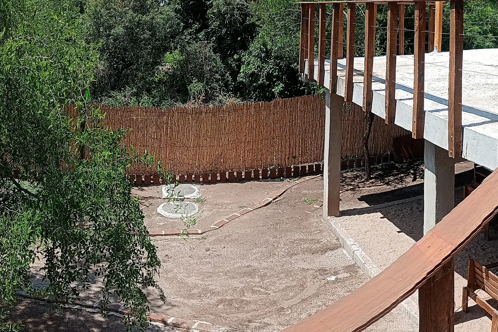

Celebraciones íntimas
Una casa, una mesa y tiempo para compartir.
Laboratorio de dirección · v0.1
La paleta se mantiene. Aquí se comparan jerarquía, diagramación, tipografía y densidad antes de reconstruir el portal.
Dirección A · recomendada
La decisión aparece primero. La atmósfera acompaña sin retrasar la consulta.
Lomas del Chañar · Río Ceballos
A 35 minutos de Córdoba. Uso exclusivo para celebraciones, jornadas corporativas y talleres.

Una casa, una mesa y tiempo para compartir.
Un entorno para pensar, ordenar y conversar.
Un espacio flexible para experiencias cuidadas.
Dirección B · alternativa
La marca y el paisaje tienen más protagonismo, pero la información sigue visible.

Galería cubierta, jardín, terraza y fuego. Cada propuesta se revisa según fecha, formato y cantidad de personas.

Prueba tipográfica
La decisión se toma con texto real, acentos, números y controles; no solo por la forma de una palabra.
Galería cubierta · 45 personas · consultar fecha
Galería cubierta · 45 personas · consultar fecha
Galería cubierta · 45 personas · consultar fecha